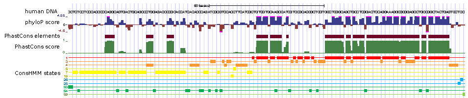

ConsHMM Atlas: conservation state annotations for major genomes and human genetic variation

The ConsHMM Atlas provides an atlas of over twenty genome-wide ConsHMM conservation state annotations for 8 organisms.
ConsHMM annotates reference genomes at single nucleotide resolution into different conservation states based on the combinatorial and spatial patterns within
a multiple species alignment inferred using a multivariate Hidden Markov Model (HMM).
ConsHMM can also produce allele specific conservation state annotations, which are provided as part of the ConsHMM Atlas
for all possible single-nucleotide mutations in the human genome. Additionally, the ConsHMM Atlas provides visualization tools of model parameters and enrichments.
- ConsHMM genome annotations for 8 organisms
reference genomes.
See available organisms and assemblies in the table below. For some organisms and assemblies multiple different genome annotations are available
based on different multi-species alignments. Browser files for the annotations are available through here.
For the human assemblies, allele specific annotations are also available.
| Organism |
Assemblies Available |
| C.elegans |
ce11 |
| D. melanogaster |
dm6 |
| Dog |
canFam3 |
| Human |
hg19, hg38 |
| Mouse |
mm10 |
| Rat |
rn6 |
| S. cerevisiae |
sacCer3 |
| Zebrafish |
danRer7, danRer11 |
- ConsHMM R Shiny app for browsing models interactively
- ConsHMM software. ConsHMM is built on top
of the ChromHMM software for chromatin state learning.
The ConsHMM Atlas is described in:
Arneson A, Felsheim B, Chien J, Ernst J.
ConsHMM Atlas: conservation state annotations for major genomes and human genetic variation.
NAR Genomics and Bioinformatics, 2:lqaa104, 2020.
The ConsHMM software is described in:
Arneson A, Ernst J.
Systematic discovery of conservation states for single-nucleotide annotation of the human genome. Communications Biology,
2,248(2019).
Funding for the ConsHMM Atlas and ConsHMM provided by US National Institutes of Health grants DP1DA044371, R01ES024995, U01HG007912 and U01MH105578 (J.E.), and T32CA201160 (A.A.), US National Science Foundation CAREER Award #1254200 (J.E.), a Kure-IT award and an Alfred P. Sloan Fellowship (J.E.).